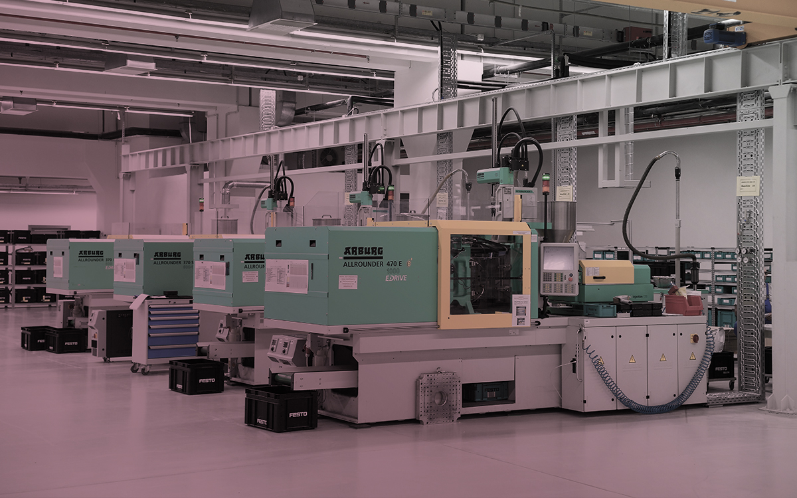

<meta charset="UTF-8">
<script src="_header.js"></script>
<link rel="stylesheet" href="css/slick.css" class="">
<link rel="stylesheet" href="css/slick-theme.css" class="">
<main>
    <article>
        <div class="bg_box">
            <ul class="bgbx_a1"></ul>
            <ul class="bgbx_a1"></ul>
            <ul class="bgbx_a1"></ul>
            <ul class="bgbx_a1"></ul>
            <ul class="bgbx_a1"></ul>
        </div>
        <section class="page_topBox">
            <div class="page_top_banner">
                <ul class="page_top_bannerPhoto"></ul>
            </div>
        </section>
        <section class="peg_content">
            <div class=""></div>
            <div class="peg_cnbox">
                <div class="peg_bar_als">
                    <div class="peg_bread_crumbs">
                        <ul class="peg_bread_txt"><a href="index.html">首頁</a></ul>
                        <ul class="peg_bread_icc"></ul>
                        <ul class="peg_bread_txt">關於捷羚</ul>
                    </div>
                </div>
                <div class="product_allBox_SA">
                    <div class="product_menu">
                        <h1 class="pageTitle">關於捷羚</h1>
                        <!-- 顯示當前分類 -->
                        <div class="m_class">公司簡介<i class="fas fa-arrow-circle-down"></i></div>
                        <!-- 顯示當前分類 END-->
                        <a href="">公司簡介</a>
                        <a href="">策略方向</a>
                        <a href="">合作機會</a>
                    </div>
                    <div class="product_box02">
                        <div class="rightTitle">公司簡介</div>
                        <div class="user_editor">
                            <p></p>
                            <p >以下為圖文編輯器，圖片最大寬度1060px高度不限</span>
                                機械是由機械結構（機構）組成，機械結構再由機械元件（構件）組成，是機械工程學的一個基本概念。機械就是能幫助人們節省工作難度或省力的工具裝置。有一些機械單純轉換力的大小或（及）方向，被稱為簡單機械。而複雜機械就是由二種或二種以上的簡單機械構成。
                                <br><br>
                                機械是一種人為的實物構件的組合，各部分構件必須實現相互的、單一的、規定的剛體運動，把施加的能量轉變為最有用的形式，或轉變為有效的機械功。 機械是機構和機器泛稱。機器具備機構的特徵外，還必須具備第三個特徵：即能代替人類的勞動，以完成有用的機械功或轉換機械能，故機器是能轉換機械能或完成有用的機械功的機構。機器是帶有驅動裝置的機構。

                            </p>

                        </div>

                    </div>
                </div>

            </div>
        </section>
    </article>
</main>
<script src="_footer.js"></script>